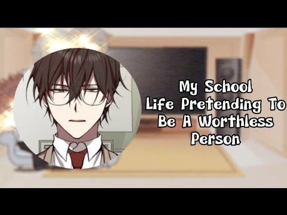

Here I am going to share my 15 must-read comics/Mangas of different genres or categories. The genres included Dungeons related, cultivation kinds, romance, martial arts, shoujo, shounen, Action, Drama, Fantasy, supernatural, reincarnation, revenge, sci-fi, historical drama, etc..,
Each comic has its own mixture of genres to give a complete work. It will be interesting to read these comics. Manga I have selected are mostly ongoing, so it will give the thrill of waiting for each chapter to get updated on their respective sites.
These comics can be read through various platforms like (manga toon, webtoon, bilibili comics, etc..,) apps or Websites (like manganato, scanlation pages, etc..,)
1. Villainess is marionette
Genre : Drama, Fantasy, Romance, Shoujo.
Ongoing chapter : Chapter 80
Groups scanlating : Gourmet scans, Flame scans.
English Publisher : Webnovel
Prolouge : Cayena, the Imperial Princess, was known as the most beautiful woman in the Empire, a woman who knew nothing but evil and luxury. However, she was destined for ruin as a chess piece by her younger brother to secure his throne and was killed by her crazy husband in previous life. She was reborn again. Will the second chance given to her make her live in peace and change her fate?
Genre : Action, Adventure, Fantasy, Harem, Martial Arts, Romance, Sci-fi, Shounen, Supernatural.
Ongoing chapter : Chapter 3252
Groups scanlating : Disaster scans.
English Publisher : Webnovel
Prolouge : After encountering a mysterious black book, Yang Kai embarks on a journey of cultivation, facing various challenges and enemies along the way. He joins a sect, meets allies and enemies, and travels to different places in search of power and knowledge. Throughout his journey, Yang Kai faces the corruption and struggles within the martial arts world and strives to overcome them.
Genre : Action, Adventure, Comedy, Drama, Martial Arts, Romance, Shounen.
Ongoing chapter : Chapter 573
Groups scanlating : Mangatoon
English Publisher : Bilibili comics
Prolouge : Ye Ming, the rising star of Family Ye is regarded as a genius among his peer cultivators. But he was schemed by his jealous cousin and the latter cut his meridians, crippled his abilities, and hamstrung him ruthlessly. But Ye Ming never gives up because he'd sacrifice everything for taking revenge for his deceased parents who were murdered by Family Huang. But he doesn't know that he is considered a pain in the neck to Family Ye and a big conspiracy is looming out of the darkness...
4. Soul land IV - Ultimate combo
Genre : Action, Adventure, Martial, Arts, Romance, Shounen, Supernatural.
Ongoing chapter : Chapter 397
Groups scanlating : soul-scanlations
English Publisher : soul-scanlations
Prolouge : 10,000 years have passed since the end of the battle of the Douluo plane with the Abyss plane. The humans of Douluo Plane conquered the space and discovered the other planes. The expedition of scientists from the Federal Research Institute roaming the northern ice land found an egg with wavering light of gold and silver. A kind man, Lan Xiao who lead the expedition hatched that egg and a cute baby boy came out. He decided to adopted the child and named him as Lan Xuanyu
5. Imprisoned one million years: My Disciples all over the world
Genre : Action, Adventure, Drama, Fantasy, Horror, Martial Arts, Shounen, Supernatural.
Ongoing chapter : Chapter 221
Groups scanlating : Shimada scans
English Publisher : Bilibili comics
Prolouge : Lu Chen, an immortal young man, was trapped in the Land of Desolation for over ten million years. After thousands of centuries of meticulous planning, he finally managed to escape; only to find a world vastly different from the one he remembered. The Old Continent had broken into countless pieces, the North and South Poles had been reversed, and the nine suns in the sky had been reduced to a single one; the oceans had sunk dozens of meters deep, huge and powerful prehistoric beasts had all but disappeared, and humans, who millions of years ago were only a small nation of tribesmen, had by now conquered the surface of the Earth. And that's not all: the mangy dog he had picked up by chance is now the leader of a sect, the little girl he had adopted out of kindness has become a fairy of a heavenly realm, and his disciple, whom he had been forced to take in, has become the Celestial Emperor.
Genre : Action, Drama, School Life, Shounen.
Ongoing chapter : Chapter 133
Groups scanlating : Reaper scans
English Publisher : Line webtoon
Prolouge : At the age of eight, Ijin Yu lost his parents in a plane crash and became stranded in a foreign land, forced to become a child mercenary in order to stay alive. He returns home ten years later to be reunited with his family in Korea, where food and shelter are plenty and everything seems peaceful. But Ijin will soon learn that life as a teenager is a whole other feat of survival. With only one year of high school left, Ijin must master new tactics to maneuver his way around the schoolhouse battleground. Can he survive a year of high school? Or rather, will the school be able to survive him?
Genre : Action, Drama, Fantasy, Comedy, Shounen.
Ongoing chapter : Chapter 55
Groups scanlating : Reaper scans
English Publisher : N/A
Prolouge : SeoJoon, who had been working to save in order to pay off his dead parents’ debt and to attend a hunter academy, ended up needing to spend all his savings for surgery due to an unfortunate accident.In his moment of despair, a weird ad played.“[You can also become an awakener!]”He decided to register since he had nothing else to lose.“[Mr. Kim SeoJoon, welcome to Transcension Academy.]”This hunter academy is on a different ‘dimension’ than other hunter academies!In the age of private hunter education, you can also become a ‘transcended’!
8. I have been struck on the same day for 3000 years
Genre : Drama, Action, Fantasy, Shounen..
Ongoing chapter : Chapter 52
Groups scanlating : Dragon Tea
English Publisher : N/A
Prolouge : In the year 2065, the newcomer, Lu Feng, entered the Obsidian Ruins in the Shadow World. He was subsequently trapped in an endless time loop of the day of his entry. Three thousand years went by, yet Lu Feng would always reset and start anew at 6 am each day, no matter how many times he died. In order to pass the long millennia, he mastered all the professions found in the Shadow World. To his surprise, what followed a common BOSS battle was not a reset, but the dawn of a new day!
9. My high school life pretending to be a worthless person

Genre : Drama, Action, Fantasy, School Life, Shounen...
Ongoing chapter : Chapter 52
Groups scanlating : Asura
English Publisher : N/A
Prolouge : Society was built around Edeya, which was invulnerable to conventional weapons. Humanity started to place all their focus into the combat power of Edeya. Park Jinsong, the main character, possessed an F-rank soul and F-rank combat power. After the introduction of a poor military program to his high school and the Edeya rank system, Park Jinsong became one of the weak, and suffered under his peers’ contempt for 10 years. However, in reality, the Edeya he had awakened was actually the S-rank “Absolute Killing Intent”. Park Jinsong was greatly disturbed by the fact that the essence of his soul revolved around the thought of killing others and continued to live his life while thinking of himself as a worthless F-rank. Will Park Jinsong, with a soul for killing, be able to get his killing intent under control and prove that there are no ranks to one’s soul?
Genre : Drama, Fantasy, Romance, Shoujo.
Ongoing chapter : Chapter 120
Groups scanlating : Manga weebs
English Publisher : Tapas , RadishFiction
Prolouge : Adele was a hapless orphan until a duke gave her a choice: live as a substitute for his dead daughter, or die on the streets. Despite playing this role to the best of her ability, an order for her assassination was given shortly after he married her off. Miraculously, she is sent back in time and decides to make up for the years wasted living a lie. Can she use her past knowledge and unexpected help from the Black Knight to defeat the dangers ahead and change fate?
11. Cultivation Chat Group
Genre : Action, Fantasy, Comedy, School Life, Supernatural.
Ongoing chapter : Chapter 529
Groups scanlating : Nekyou memoir scanlation
English Publisher : Webnovel
Prolouge : On a certain day, Song Shuhang accidentally joined a deeply afflicted Xianxia chuunibyou chat group, the group members inside all address each other as ‘fellow daoist’. Their contact cards are all either Sect Master, Cave Master, Spiritual Master or Heavenly Expert. Even the group master’s missing pet dog named Great Devil Dog abandoned his home. They chat all day about things like concocting pills, intruding mysterious territories, martial arts experiences and more. One day, he abruptly realizes after lurking for a long time that in this group, every single group member is actually a real cultivator, with the ability to move mountains and drain seas, the kind that can live for thousands of years! His worldview has utterly collapsed in a single night!
Genre : Drama, Action, Historical, Martial Arts, Fantasy, Romance, Shoujo.
Ongoing chapter : Chapter 531
Groups scanlating : Read manghua
English Publisher : Webnovel
Prolouge : She, the leader of the hidden sect, specializes in poison and assassination. A genius, and a weirdo, in the eyes of others. After dying from an accident, she was reborn in the body of a disfigured lady. Having her identity changed and unable to return to her family, she abandoned them, but, if she doesn't take revenge on those who caused her harm, will she be worthy of the title "The Ghostly Doctor "? As clouds gather, heroes fight to be the strongest! How will she conquer the world in a red robe, and fight among the strong heroes?!
13. Like husband, like son
Genre : Drama, Romance, Shoujo.
Ongoing chapter : Chapter 199
Groups scanlating : N/A
English Publisher : Bilibili comics
Prolouge : This should be the happiest moment of my life. In my wedding gown, waiting for my groom, didn’t even realize I lost conscious; Until I woke up, after giving birth to a child? Where is my child and who is the father? Years after the fact, will I be able to find out what happened that day?
14. My secretly hot husband
Genre : Fantasy, Romance, Shoujo.
Ongoing chapter : Chapter 80
Groups scanlating : Just Do it.
English Publisher : Tapas , Radish Fiction
Prolouge : Another lifetime, another hard life—Letitia’s misery continues as her uncle sends her off to the “Monster Lord” to fulfill an old pledge. Imp attacks! The three witches! A hideous masked devil hunter husband! Terrifying is an understatement. But as she becomes the lady of Halstead, the rumors fall apart. Lord Erden is caring, he likes bunnies, and that *gasp* perfect face under the mask! How can he not know he’s HOT? Can she help protect the castle from devils and help Erden see his true self?
15.I randomly have a new career every week
Genre : Drama, Fantasy, Harem, Shoujo.
Ongoing chapter : Chapter 412
Groups scanlating : N/A.
English Publisher : N/A
Prolouge : Experience the job as a driver and gain the reward of a Pagani. Experience the job as a university teacher and gain the reward of ten buildings. Experience the job as a landlord and gain 160 million dollars. All about experiences… This story is also called Why Are the People Who Like Me So Nice, Urban Beauties, and I Am Tired of Being Rich.
Each story/manga has its own color added, to make the reader drawn into it. It is the reader's choice which one they want to read. so enjoy reading as much as you want and don't restrict yourself to genres. Be wild and bold enough to explore new things it will give you the contented pleasure of reading.